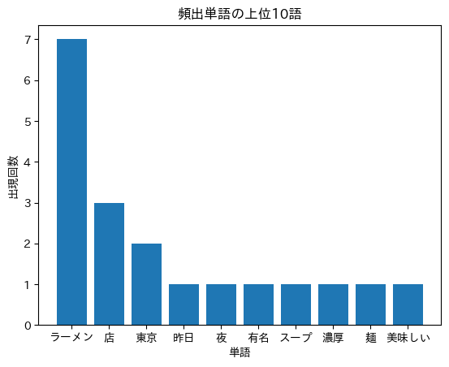
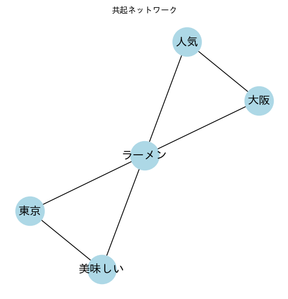
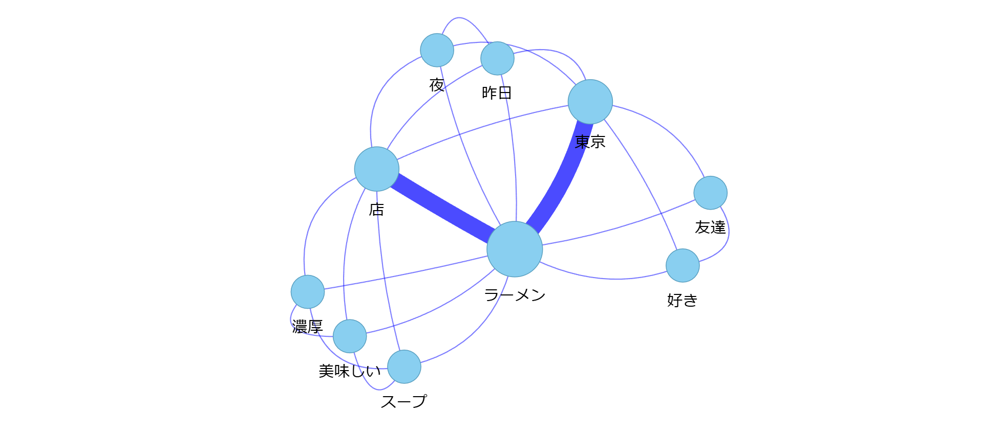

4. 可視化#
今回のゴール
単語頻度の棒グラフを作成する
ワードクラウドを作成する
共起ネットワークの作成と、その他の可視化の用途を知る
4.1. 頻出単語の棒グラフ#
テキストデータを解析した後は、頻出する単語を棒グラフで可視化することで直感的に理解できる。
数値だけでなく、どの単語が多いのかをグラフで示すと一目で把握できる。
4.1.1. プログラム例（頻出単語の棒グラフ）#
ライブラリをインストール（必要に応じて）
!pip -q install spacy ginza ja-ginza
グラフの日本語表示のライブラリをインストール
!pip -q install japanize_matplotlib
プログラム
import spacy
import matplotlib.pyplot as plt
import japanize_matplotlib
from collections import Counter
nlp = spacy.load("ja_ginza")
# 対象文書
text = """
昨日の夜は東京の有名なラーメン店に行きました。
そのラーメン店はスープが濃厚で、ラーメンの麺はとても美味しかったです。
私はラーメンと餃子を注文し、友達はラーメンとチャーハンを注文しました。
店内は観光客でにぎわっていて、東京でも人気のラーメン店だと感じました。
最後にアイスを食べましたが、やはりラーメンが一番印象的でした。
"""
# 名詞・固有名詞・形容詞
target_pos = ("NOUN", "PROPN", "ADJ")
# ストップワード
stop_words = ["\n", " ", " "]
# 単語リストを作成
doc = nlp(text)
all_terms = []
for token in doc:
if token.pos_ in target_pos and token.lemma_ not in stop_words:
all_terms.append(token.lemma_)
# 頻度を集計
counter = Counter(all_terms)
common = counter.most_common(10)
# データをプロット用に分解
words = []
counts = []
i = 0
while i < len(common):
item = common[i]
words.append(item[0])
counts.append(item[1])
i = i + 1
# 棒グラフ表示
plt.bar(words, counts)
plt.title("頻出単語の上位10語")
plt.xlabel("単語")
plt.ylabel("出現回数")
plt.show()
出力

4.2. ワードクラウド#
ワードクラウドは、単語の出現頻度に応じて文字の大きさを変えて表示する手法。
単語の重要度を直感的に把握するのに適している。
4.2.1. プログラム例（ワードクラウド）#
Google Colab（Linux環境）上で日本語フォントをインストール
!apt-get -y install fonts-ipaexfont
プログラム
import spacy
from collections import Counter
from wordcloud import WordCloud
import matplotlib.pyplot as plt
import os
from matplotlib import font_manager
nlp = spacy.load("ja_ginza")
# 対象文書
text = """
昨日の夜は東京の有名なラーメン店に行きました。
そのラーメン店はスープが濃厚で、ラーメンの麺はとても美味しかったです。
私はラーメンと餃子を注文し、友達はラーメンとチャーハンを注文しました。
店内は観光客でにぎわっていて、東京でも人気のラーメン店だと感じました。
最後にアイスを食べましたが、やはりラーメンが一番印象的でした。
"""
# 名詞・固有名詞・形容詞
target_pos = ("NOUN", "PROPN", "ADJ")
# ストップワード
stop_words = ["\n", " ", " "]
# 改行文字（"\n","\r\n"等）を一括で除去。ワードクラウドでは改行文字はエラーとなるため
text = "".join(text.splitlines())
# 単語リストを作成
doc = nlp(text)
all_terms = []
for token in doc:
if token.pos_ in target_pos and token.lemma_ not in stop_words:
all_terms.append(token.lemma_)
# 頻度を集計
counter = Counter(all_terms)
freq_dict = {}
for term, cnt in counter.items():
freq_dict[term] = cnt
jp_font_path = "/usr/share/fonts/opentype/ipaexfont-gothic/ipaexg.ttf"
# WordCloud の生成
wc = WordCloud(
width=800,
height=400,
background_color="white",
font_path=jp_font_path,
# max_words=100,
random_state=0
)
wc = wc.generate_from_frequencies(freq_dict)
# 表示
plt.imshow(wc, interpolation="bilinear")
plt.axis("off")
plt.tight_layout()
plt.show()
出力
4.2.2. 見た目を調整する主なパラメータ#
パラメータ名 |
例 |
説明 |
|---|---|---|
|
|
出力画像のサイズ。横長や縦長を調整。 |
|
|
背景色を変更。 |
|
|
単語のカラーマップを変更。matplotlibのカラーマップ名を指定。 |
|
|
表示する単語の最大数。多すぎると読みづらい。 |
|
|
小さい文字の最小サイズを設定。 |
|
|
最大フォントサイズを明示的に指定可能。 |
|
|
日本語フォントのパス（必須）。 |
|
|
頻度と文字サイズの比例度。 |
|
|
高解像度出力。2倍にすると滑らかに。 |
|
|
単語間の余白。小さすぎると重なりやすい。 |
|
|
横書き単語の割合。 |
|
|
「ラーメン 店」のような複合語を結合するかどうか。日本語では |
|
|
配置の再現性を確保。 |
|
|
単語の輪郭線を追加。立体感を出すときに有効。 |
4.3. 共起ネットワーク#
共起 とは、「同じ文や段落など、一定の範囲内で一緒に出現する単語」のこと。
例えば、「東京」「ラーメン」が同じ文に現れるとき、「東京」と「ラーメン」には共起関係があるといえる。
共起ネットワークは、単語をノード、共起関係をエッジ（線）で表したグラフ構造。
4.3.1. 共起ネットワークの特徴#
観点 |
内容 |
|---|---|
目的 |
単語間の関係構造を可視化し、文脈的なまとまりを発見する |
入力 |
テキスト中の単語と、それらの共起回数 |
出力 |
ノード（単語）とエッジ（共起関係）から成るネットワーク図 |
分析効果 |
どの単語が中心的か（中心性）、どんな語群が結びついているか（クラスタ構造） |
共起行列の作成手順
テキストを文単位に分割する
各文中に出現する単語の組み合わせを抽出する
単語ペアごとに共起回数をカウントする
共起行列（共起頻度表）を作る
例
文1：東京のラーメンは美味しい。
文2：大阪のラーメンも人気がある。
文1に含まれる単語：
[東京, ラーメン, 美味しい]→ 共起ペア：(東京, ラーメン)、(東京, 美味しい)、(ラーメン, 美味しい)文2に含まれる単語：
[大阪, ラーメン, 人気]→ 共起ペア：(大阪, ラーメン)、(大阪, 人気)、(ラーメン, 人気)
単語1 |
単語2 |
共起回数 |
|---|---|---|
東京 |
ラーメン |
1 |
東京 |
美味しい |
1 |
ラーメン |
美味しい |
1 |
大阪 |
ラーメン |
1 |
大阪 |
人気 |
1 |
ラーメン |
人気 |
1 |
この表が「共起行列」の一部に相当し、これを使ってネットワークを作ると、 「東京」「大阪」といった地域語を中心に「ラーメン」「人気」「美味しい」といった関連語がつながる構造が得られる。

4.3.2. プログラム例（共起ペアの計算）#
ライブラリインストール（必要に応じて）
!pip -q install spacy ginza ja-ginza
プログラム
import spacy
import pandas as pd
from collections import Counter
from itertools import combinations
nlp = spacy.load("ja_ginza")
texts = [
"昨日の夜は東京のラーメン店に行きました。",
"そのラーメン店はスープが濃厚で、とても美味しかったです。",
"友達もラーメンが好きで、よく東京で食べます。"
]
target_pos = ("NOUN", "PROPN", "ADJ")
stop_words = ["\n", " ", " "]
# 共起ペア
pairs = []
# 共起語ペアの抽出とカウント
for text in texts:
doc = nlp(text)
words = []
for token in doc:
if token.pos_ in target_pos and token.lemma_ not in stop_words:
words.append(token.lemma_)
for w1, w2 in combinations(set(words), 2):
pairs.append(tuple(sorted([w1, w2])))
co = Counter(pairs)
# 共起回数をカウント
co = Counter(pairs)
# DataFrame（単語ペア・共起回数）
df_co = pd.DataFrame(co.items(), columns=["単語ペア", "共起回数"])
df_co
出力
単語ペア |
共起回数 |
|
|---|---|---|
0 |
ラーメン,夜 |
1 |
1 |
ラーメン,東京 |
2 |
2 |
ラーメン,店 |
2 |
3 |
ラーメン,昨日 |
1 |
4 |
夜,東京 |
1 |
5 |
夜,店 |
1 |
6 |
夜,昨日 |
1 |
7 |
店,東京 |
1 |
8 |
昨日,東京 |
1 |
9 |
店,昨日 |
1 |
10 |
スープ,ラーメン |
1 |
11 |
ラーメン,濃厚 |
1 |
12 |
ラーメン,美味しい |
1 |
13 |
スープ,店 |
1 |
14 |
スープ,濃厚 |
1 |
15 |
スープ,美味しい |
1 |
16 |
店,濃厚 |
1 |
17 |
店,美味しい |
1 |
18 |
濃厚,美味しい |
1 |
19 |
友達,東京 |
1 |
20 |
好き,東京 |
1 |
21 |
ラーメン,友達 |
1 |
22 |
友達,好き |
1 |
23 |
ラーメン,好き |
1 |
4.3.3. 共起ネットワークの可視化#
ネットワーク可視化ライブラリをインストール
!pip -q install pyvis
プログラム
import spacy
import pandas as pd
from itertools import combinations
from collections import Counter
from pyvis.network import Network
import networkx as nx
from IPython.display import HTML
from google.colab import files
nlp = spacy.load("ja_ginza")
texts = [
"昨日の夜は東京のラーメン店に行きました。",
"そのラーメン店はスープが濃厚で、とても美味しかったです。",
"友達もラーメンが好きで、よく東京で食べます。"
]
target_pos = ("NOUN", "PROPN", "ADJ")
stop_words = ["\n", " ", " "]
# 共起ペア抽出
pairs = []
node_freq = Counter()
for text in texts:
doc = nlp(text)
words = []
for token in doc:
if token.pos_ in target_pos and token.lemma_ not in stop_words:
words.append(token.lemma_)
node_freq.update(words)
for w1, w2 in combinations(set(words), 2):
pairs.append(tuple(sorted([w1, w2])))
# 共起回数をカウント
co = Counter(pairs)
# DataFrame（単語ペア・共起回数）
df_co = pd.DataFrame(co.items(), columns=["単語ペア", "共起回数"])
# print(df_co)
# ノードの配置を計算（seed を固定すると毎回同じ配置になる）
G = nx.Graph()
for node in node_freq:
G.add_node(node)
for (a, b), freq in co.items():
G.add_edge(a, b, weight=freq)
pos = nx.spring_layout(G, seed=1, k=0.5) # k を大きくするとノードの間隔が広がる
# 共起ネットワーク構築
net = Network(
height="600px",
width="100%",
bgcolor="white",
font_color="black",
cdn_resources="in_line" # Colabでの表示の場合
)
# ノード追加（出現頻度に応じてサイズ変更、位置は計算した座標）
# scale：配置の広がり。ノードが多くて重なる場合は 1000 などに大きくする
scale = 300
for node, freq in node_freq.items():
x, y = pos[node]
net.add_node(node, label=node, size=10 + freq * 5, color="#89CFF0",
x=float(x) * scale, y=float(y) * scale)
# エッジ追加（共起頻度で太さと濃さを調整）
for (a, b), freq in co.items():
# 出現頻度が1回以上
if freq >= 1:
color = f"rgba(0,0,255,{min(0.3 + 0.2*freq, 1)})"
net.add_edge(a, b, value=freq, title=f"共起数: {freq}", color=color)
# 物理シミュレーションを止める（ネットワークが静止する）
net.toggle_physics(False)
# HTMLファイルを保存したい場合
# net.write_html("co_network.html")
# files.download("co_network.html")
# Colabで可視化
net.prep_notebook()
html = net.generate_html()
display(HTML(html))
出力

4.3.4. 共起ネットワークの分析の視点#
共起ネットワークを作成したあとは、グラフの形そのものを読み解く分析が重要になる。
ノードの配置やエッジのつながりから、どんな語が中心的な意味を持つのか、どのような話題のまとまりが存在するのかを解釈する。
4.3.4.1. 読み取りのポイント#
中心語を見る：ネットワークの中央に位置する語は、そのテーマの「ハブ」になっている。
グループ（クラスタ）を探す：近い位置に固まる単語群は、同じ文脈や話題を共有している。
線の太さに注目：共起回数が多い語ほど、強い関係性を持つ。
孤立語も重要：あまり共起しない語は、特定の文脈でのみ登場する特徴的な語である場合がある。
共起ネットワークは単なる単語の関係図ではなく、話題構造や意味的関連を読み解く道具として活用できる。
4.3.5. 可視化手法の使い分けのイメージ#
分析の目的 |
適した手法 |
補足 |
|---|---|---|
文章の中でどんな単語が多いかを見たい |
ワードクラウド |
テキスト全体の印象を素早くつかむ |
単語がどのようにつながっているかを知りたい |
共起ネットワーク |
テーマ間の関係性や共通語を把握 |
文書を自動的にグループ分けしたい |
クラスタリング |
潜在的なトピック構造を発見する |